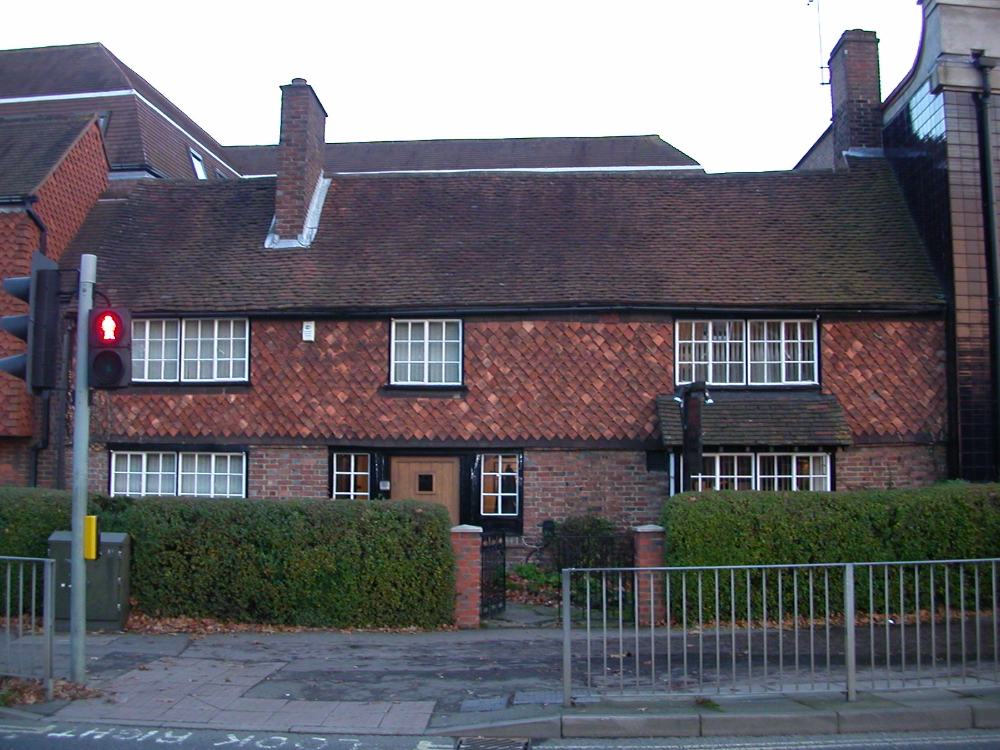

Chapter 6
The First Critical Hour
The smoke came under the door.
Thomas Farriner woke to smoke billowing under his bedroom door in the early hours of Sunday, 2 September 1666, in his house on Pudding Lane. The bedroom lay above the bakery. The smoke rising from below carried the particular acrid scent of burning grain and scorched brick. He found his daughter. Together they made for the stairs, but the lower rooms were already impassable. The fire had taken hold in the bakehouse proper. The oven’s residual heat, the fuel stores, the timber framing that held the structure together—all of it was now feeding the flames.
They climbed back up. The maidservant, whose name the records do not preserve, was too frightened to try the window. Farriner and his daughter went through it without her, crossing to the roof of the neighboring house, dropping down to safety on the street below. The maid remained inside. When the house burned down, she became the fire’s first victim.
This was not supposed to happen. London had procedures for exactly this contingency. A thousand watchmen patrolled the streets after dark, alert for fire among their other duties. Each parish maintained leather buckets, firehooks for pulling down thatch and timber, and manual engines for throwing water. The very density that made fire dangerous had also produced a culture of vigilance and mutual aid. A fire in a bakery, however unfortunate, was a known quantity. The question was not whether it could be stopped, but how quickly.
The answer, in this case, was: not quickly enough. And the gap between the resources available and the result achieved is the measure of the first critical hour.
We must reconstruct what happened from fragments. The parliamentary inquiry held in the months after the fire, the London Gazette’s hurried reports, the scattered private testimonies that survive in diaries and depositions: these give us not a continuous record but a series of illuminated moments against a dark background. We know the starting point. A fire in a bakehouse, already advanced enough to trap a servant and force an escape through an upper window. We know the endpoint, visible within the hour: flames spreading to adjacent structures, the local response overwhelmed, the first calls going out for assistance beyond the parish boundary. What we must infer, carefully, is the sequence of decisions and non-decisions that turned a containable incident into an established conflagration.
The first response came from the household itself. Farriner, once safely on the street, would have done what any householder did. Summon help. Organize the bucket chain. Farriner’s neighbours tried to douse the fire. The bakehouse was a single structure, or nearly so: attached to the dwelling house but with its own fuel stores, its own ventilation, its own risks. A fire confined to the bakehouse might destroy the baker’s livelihood but spare the street. This was the hope, and perhaps the assumption, that governed the first minutes.
But fire does not respect assumptions. The bakehouse contained the fuel that fed it: faggots, sea-coal, perhaps the train oil used for lighting and lubrication. The building itself was timber-framed, the walls filled with lath and plaster, the roof thatched or shingled. Once the fire broke through the interior partitions, it had material to feed on and avenues to travel. The high wind that would become notorious in later accounts was already blowing, carrying sparks and embers across the narrow gaps between structures.
The parish constables arrived, summoned by the alarm or by Farriner himself. After an hour, they judged that the adjoining houses should be demolished to prevent further spread. Their authority was limited but specific: to organize the local response, to commandeer buckets and labor, to decide whether a fire could be handled within the parish or required escalation to the ward or the city. We do not have their names. We do not know what they saw when they rounded the corner into Pudding Lane, whether the bakehouse was already fully engulfed, whether flames had reached the neighboring dwellings, whether they made a judgment call or simply reacted to events as they unfolded. What we can say is that they did not, or could not, stop the fire at its source.
The manual engines arrived. Eventually. These were heavy, cumbersome devices, essentially large syringes on wheels, requiring teams of men to operate and a ready water supply to be effective. In principle, water was available from a system of elm pipes which supplied 30, 000 houses via a high water tower at Cornhill, filled from the river at high tide. The Thames was close, but Pudding Lane ran narrow; the engines could not easily be maneuvered into position. The bucket chain, that ancient method of human relay, could not deliver volume fast enough to check a fire that had already reached the roof timbers.
Here we must pause to consider what “containment” meant in the London of 1666. The standard procedure for a fire that could not be extinguished was demolition: pulling down houses ahead of the flames to create a firebreak, starving the fire of fuel. This was destructive, expensive, and legally complicated. It required tools (firehooks for pulling down thatch, axes and saws for timber, gunpowder for the more substantial structures) and it required authority. A constable could organize a bucket chain. He could not, on his own initiative, order the destruction of private property. That power resided higher in the chain of command: with the aldermen, with the Lord Mayor, with the mechanisms of city government that had evolved to balance public safety against property rights.
The first critical hour was thus defined by a structural mismatch between the scale of the emergency and the locus of decision-making authority. The fire advanced street by street, roof by roof, while the information about its severity traveled more slowly upward through the administrative hierarchy. This was not negligence in the ordinary sense. It was the normal operation of a system designed for routine hazards, confronted with an event that exceeded its design parameters.
By the time the fire had spread beyond the immediate vicinity of Pudding Lane, it had established what we might call operational momentum. A fire that has reached multiple structures, that has found fuel in haylofts and timber yards and the combustible contents of warehouses, generates its own weather. Columns of heated air draw in cooler air at ground level. Winds carry embers across firebreaks. Radiant heat ignites materials before the flames themselves arrive. The high wind of September 2, 1666, was an external condition, but the fire quickly became an engine that amplified and directed it.
The eyewitness testimony, gathered later under conditions of trauma and legal jeopardy, is fragmentary and sometimes contradictory. Some accounts suggest that the fire spread with extraordinary speed, that the constables and householders were simply overwhelmed by physical forces beyond human control. Others hint at delay, at confusion, at the failure to recognize the severity of the threat until it was too late. The parliamentary inquiry, charged with assigning responsibility, would hear both explanations and struggle to reconcile them.
What we can establish with reasonable confidence is this: within the first hour, the fire had escaped the confines of the bakehouse and established itself in neighboring structures. The local response (buckets, hooks, the first manual engines) had failed to contain it. The constables had not, or could not, escalate the response to the level of demolition and city-wide alarm. The fire was, by dawn, visible above the rooftops and advancing on multiple fronts.
The cost of this hour would become apparent only gradually, as the fire burned through Sunday and into Monday, Tuesday, Wednesday. But the decisive moment, the point at which a containable incident became an unassailable conflagration, can be located here: in the gap between the awakening of Thomas Farriner and the arrival of sufficient force to challenge the fire’s advance. The city would pay for that gap in acres of destroyed fabric, in thousands of displaced households, in the eventual overhaul of its building codes and fire prevention measures. The immediate price was paid by the maidservant who did not escape, her name unrecorded, her death noted only in the margins of larger narratives.
To understand why the first hour mattered so much, we must look at what London expected of itself and what it actually possessed. The city’s fire-fighting arrangements were not negligible. They had evolved over centuries of living with timber, thatch, and open flame. The watchmen’s patrols, the parish engines, the stored buckets and hooks: these represented a significant investment in collective security. But they were designed for fires that started small and stayed small, for incidents that could be contained by the resources of a single parish or, at most, a ward.
The Great Fire of London would expose the limitations of this system in the most dramatic possible fashion. Yet those limitations were not obvious beforehand. London had experienced serious fires before, most recently in 1632 and 1633, and had survived them. The city’s recovery from those disasters had reinforced a certain confidence in its own resilience. The mechanisms that had worked then would work again, or so it was reasonable to assume.
What made September 1666 different was the conjunction of circumstances: the drought that had dried the timber and thatch to tinder, the easterly wind that drove the flames westward into the heart of the city, the hour of the fire’s discovery when most of the population was asleep and the watchmen’s vigilance at its lowest ebb. Any one of these factors might have been manageable. Together, they produced a situation that outran the institutional response before that response could even be fully mobilized.
The physical environment of Pudding Lane compounded the difficulty. The street ran narrow between Eastcheap and the Thames, an artery of commerce lined with warehouses and tenements. It ran between Eastcheap and Thames Street in the historic City of London. The riverfront nearby stored the materials of London’s prosperity: hemp, tar, oil, coal, the imports that fed the city’s industries and heated its homes. Farriner’s bakery was not an isolated structure but part of a dense fabric of risk, each building connected to its neighbors by proximity, by shared walls, by the common vulnerability of timber and thatch.

When the fire broke out of the bakehouse, it found immediate fuel in this surrounding environment. The exact sequence of the spread is difficult to reconstruct, but the general pattern is clear enough. Embers carried by the wind landed on neighboring roofs. Radiant heat ignited materials in adjacent buildings before the flames themselves arrived. The fire moved not as a single front but as a series of ignitions, each one establishing a new base from which to advance.
The human response to this pattern was necessarily chaotic. We can imagine the scene on Pudding Lane in those first minutes: the shouting, the running, the attempts to organize resistance against an enemy that could not be confronted directly. Farriner, having escaped with his daughter, would have been among those trying to rally help. The constables, arriving from their rounds or from their beds, would have assessed the situation as best they could. The neighbors, roused by the alarm, would have faced the choice between flight and resistance.
The records do not allow us to follow individual stories through this confusion. We do not know who first raised the cry of fire, who organized the first bucket chain, who attempted to use the firehooks on the thatch of the burning bakehouse. What we can say is that these efforts, however valiant, were insufficient. The fire had too great a start, the wind too strong a push, the available resources too limited a reach.
The question of timing is crucial here. If the fire had been discovered earlier, if the response had been faster, if the wind had been less fierce: these counterfactuals haunt any account of the first critical hour. But we must be careful not to let them obscure what actually happened. The fire was discovered when it was discovered, by a man waking to smoke in his bedroom. The response proceeded at the speed that it did, limited by the technology of the time and the structure of authority. The wind blew as it blew. The gap between what was needed and what was available is the measure of the disaster’s first phase.
This gap had psychological as well as institutional dimensions. The inhabitants of Pudding Lane, like Londoners generally, were accustomed to fire. They knew what it looked like when a chimney caught light, when a candle overturned, when an oven overheated. They had protocols for these events, reflexes developed through repetition. The fire that confronted them in the early hours of September 2 was different in scale and speed, but the difference may not have been immediately apparent. The first response was shaped by the expectation that this was a familiar emergency, to be handled by familiar means.
Only gradually, as the buckets failed and the flames spread, would the true nature of the threat have become clear. This recognition lag, the time required to understand that a routine procedure was inadequate to an exceptional situation, is a common feature of disaster. In the first critical hour, it meant that the fire advanced while the response remained calibrated to a smaller scale of emergency.
The constables faced a particular version of this problem. Their authority was clear within the boundaries of routine. They could commandeer labor, direct the use of parish equipment, call for assistance from neighboring wards. But the decision to escalate beyond these measures, to authorize demolition or to summon the Lord Mayor, required a judgment about the severity of the fire that was difficult to make in the moment. Too early an escalation would be wasteful and unpopular; too late, and the fire would be beyond control. The evidence suggests that they erred on the side of caution, or that the fire simply outran their capacity to assess it.
The manual engines, when they arrived, embodied another dimension of the problem. These machines were impressive in conception: large barrels mounted on wheels, with pumps and hoses to direct water onto the flames. In practice, they were cumbersome and limited. They required many men to operate, a ready supply of water, and favorable positioning. On Pudding Lane, narrow and crowded, with the Thames close but not easily accessible, these conditions were difficult to meet. The engines could deliver water, but not enough and not fast enough to check a fire that had already established itself in multiple structures.
The bucket chain, the more primitive but more flexible method, faced its own limitations. It relied on human labor organized in a continuous line, passing containers of water from hand to hand. This could deliver a steady flow, but not the volume needed to extinguish a serious fire. And it exposed the participants to danger: heat, smoke, falling debris, the risk of being cut off by the advancing flames. As the fire spread, the bucket chain would have become increasingly difficult to maintain, its human links driven back or dispersed.
By the end of the first hour, the situation had transformed. What had begun as a fire in a single bakehouse was now a conflagration involving multiple structures, with flames visible above the rooftops and the first rumors spreading beyond the immediate neighborhood. The local resources had been committed and found wanting. The constables had made their assessments, or failed to make them in time. The engines had been deployed, or not deployed effectively. The bucket chains had been organized, and broken, and reorganized, and broken again.
The fire had achieved what we might call strategic independence. It no longer depended on its original source of ignition for sustenance. It had found fuel in the surrounding buildings, momentum in the wind, avenues of advance in the narrow lanes and jettied upper stories. It could now propagate itself, establishing new centers of ignition as it moved. The task of containment had become exponentially more difficult, requiring not the resources of a parish but the coordinated effort of the city as a whole.
This transformation was not yet apparent to most of those involved. The inhabitants of Pudding Lane and its vicinity would have been focused on immediate survival and the protection of property. The constables would have been attempting to maintain order and direct such resources as remained available. The wider city would have been largely unaware, its population still asleep or beginning the slow awakening of a Sunday morning. But the fire was already beyond them, establishing the conditions for the disaster that would unfold over the following days.
The cost of this hour, as we have noted, would be measured in many currencies. The immediate human cost was the maidservant who did not escape, her death a small, terrible fact against the larger background of destruction. The economic cost was the loss of Farriner’s bakery and the neighboring structures, the beginning of a tally that would eventually encompass most of the medieval city. The political cost was the exposure of the city’s fire-fighting arrangements as inadequate to a serious emergency, leading to the inquiries and recriminations that would follow. The psychological cost was the shattering of confidence in the city’s resilience, the dawning recognition that London was vulnerable in ways that had not been fully appreciated.
All of these costs were latent in the first critical hour, present as potential before they became actual. The fire, now established in a neighboring warehouse and visible above the rooftops at dawn, hands off a crisis that has definitively outgrown local control, demanding mayoral and royal intervention.